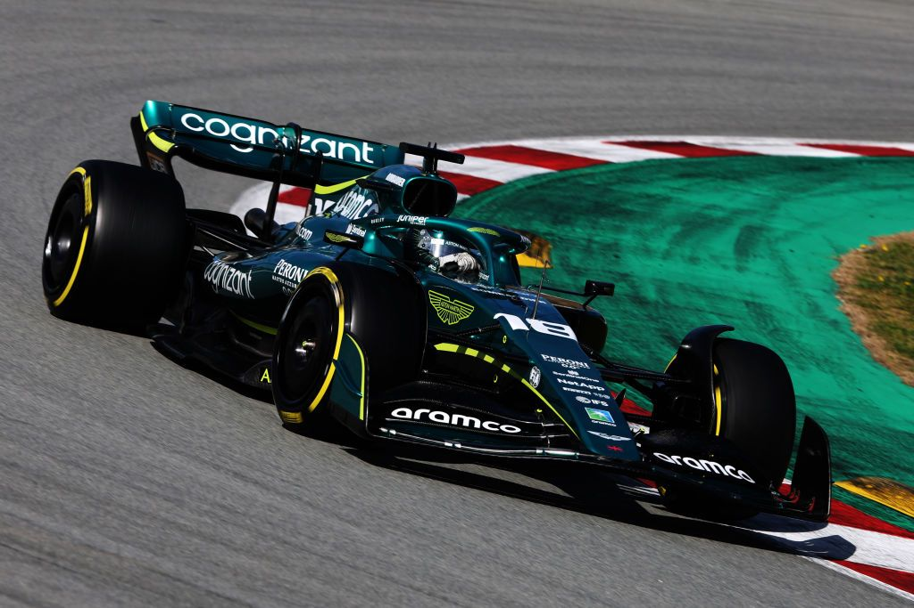

Lance Stroll
DRIVER PRESENTATION
Lance Stroll
Evolución Técnica y Consistencia Competitiva de Lance Stroll en la Parrilla de Élite
Lance Stroll inició su carrera en el karting internacional (2008), respaldado por un riguroso programa de desarrollo que lo llevó a dominar la Fórmula 3 Europea en 2016. Su debut en Fórmula 1 con Williams en 2017 fue histórico, convirtiéndose en el piloto más joven en lograr un podio en su temporada de novato en el GP de Azerbaiyán. Tras su paso por Racing Point, donde demostró habilidades excepcionales en condiciones de lluvia logrando una pole position en Turquía 2020, Stroll se integró al proyecto de Aston Martin en 2021. Durante este período, ha demostrado una notable madurez táctica y una capacidad constante para maximizar el rendimiento del monoplaza en situaciones de carrera complejas. Con múltiples podios y una trayectoria de crecimiento sostenido, Stroll representa la perseverancia técnica y la adaptabilidad necesaria para competir en el máximo nivel del automovilismo mundial.
MOMENTOS DESTACADOS

Podio Histórico en Bakú
2017: Con Williams, Stroll se convierte en el piloto más joven en subir al podio en su año de debut.

Pole Position en Turquía
2020: Una exhibición de control bajo la lluvia extrema de Estambul, logrando su primera pole position en F1.
Podio en Monza 2020
Una carrera caótica donde Stroll demostró su temple para mantenerse en los puestos de vanguardia y lograr un podio vital.